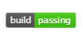
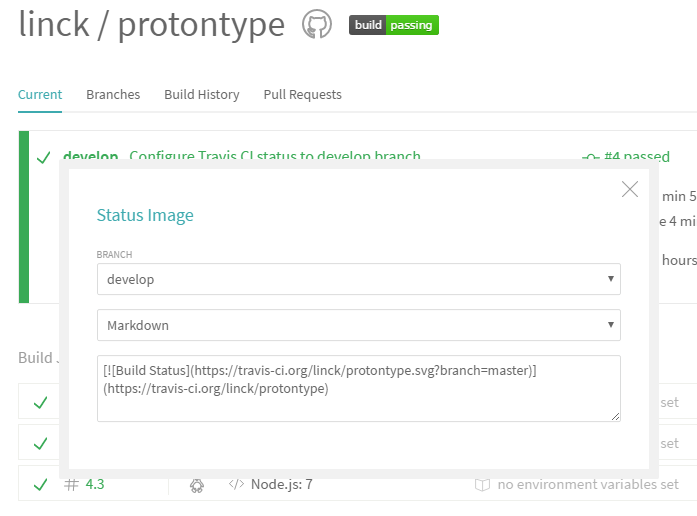
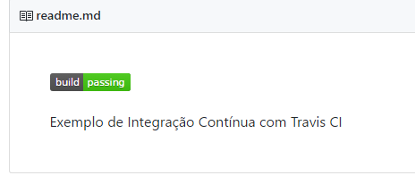

O uso de integração contínua é cada vez mais indispensável para garantir a qualidade e o de um projeto, especialmente se for opensource.
O que é Integração Contínua?
Em termos simples, integração contínua é a forma de garantir que seu projeto está funcionando a cada modificação do reposítorio, commit ou build. Este processo possibilita testar e fazer build do seu projeto em várias versões de runtime ou em vários ambientes de forma frequente, garantindo a qualidade e o funcionamento daquele módulo. Por exêmplo, a cada push para o GitHub a ferramenta irá clonar o projeto, baixar as dependências e executar os testes.
A ferramenta de integração contínua será tão eficiente quanto os testes implementados no seu projeto. Por isso é importante ter uma boa cobertura de testes.
A ferramenta Travis CI faz isso de forma fácil, rápida e simples de configurar. Para habilitar o Travis no seu repositório github é só seguir os passos a baixo.
Pré-requisitos
- Um projeto nodejs no github
- Implementação de testes
Caso queira poderá clonar ou consultar o repositório de exemplo deste post no GitHub do Devlog
Configurar para execução dos testes do seu projeto NodeJS
O Travis CI roda por padrão o comando npm test para executar os testes do projeto.
Configure o sript test no seu package.json para executar os testes com sua ferramenta preferida. No exemplo abaixo usamos o Mocha para execução dos testes.
|
|
Criar arquivo .travis.yml na raiz do projeto
|
|
O campo node_js indica para quais versões do NodeJS queremos que o Travis CI rode o processo de integração contínua. Neste caso ele fará o build e rodará os testes 3 vezes: uma para versão 5, outra para versão 6 e outra para a versão 7 do NodeJS.
Agora faça push de todas as alterações par ao GitHub
Criar uma conta no Travis
- Acesse o site do Travis CI
- Crie uma conta. Podemos fazer o login através da conta do GitHub
- Habilite seu projeto
Teste
Agora faça uma modificação em algum arquivo, commite e faça um push para o GitHub.
Pronto, verifique lá no site do Travis CI que ele está executando o build do seu projeto e executando os testes.
Pronto! Seu projeto já estará rodando uma Integraçao Contínua.
Exibindo Status do Build no GitHub
No site do travis clique na imagem:
Escola a opção markdown
Coloque no seu readme.md
123[](https://travis-ci.org/linck/protontype)Exemplo de Integração Contínua com Travis CIResultado

Obs: Verifique se o parâmetro ?branch=develop está apontando para branch correta